Module 8 - Xử lý và phân tích dữ liệu Vector
Tác giả: Codrina
Biên dịch và bản địa hoá: Quách Đồng Thắng
Giới thiệu
Module này tập trung vào mô hình dữ liệu địa lý cụ thể, đó là mô hình vector.
Kết thúc Module này, người học sẽ nắm được các kiến thức cơ bản về các khái niệm sau:
- vector data model
- metadata
- vector processing
- spatial data analysis
- geostatistics
- topology
- geoprocessing
và có được các kỹ năng sau
- Kiểm tra chất lượng dữ liệu vector sử dụng các thuật toán kiểm tra topology và thực hiện các hiệu chỉnh tự động cơ bản;
- Làm việc với các thuật toán để xác định các lỗi có trong bảng thuộc tính;
- Vector data processing - Chạy các thuật toán xử lý không gian đơn giải để trả lời các câu hỏi như có bao nhiêu toà nhà/ công trình công cộng trong một khu vực địa lý nhất định?
- Vector data processing - sử dụng các thuật toán thống kê không gian để điền các dữ liệu còn thiếu.
Các công cụ và tài nguyên cần thiết
- Module này được thiết kế sử dụng QGIS version 3.16.1 - Hannover
- Dữ liệu được sử dụng trong các bài tập cụ thể của Module này được trình bày trong bảng bên dưới:
- CRS được sử dụng là VN-2000 / TM-3 105-45 (Múi chiếu 3 độ, kinh tuyến trục địa phương cho Tp.HCM), EPSG:9210. Bởi vì đây là hệ toạ độ phẳng, cho phép thực hiện các tính toán hình học.
Yêu cầu về kỹ năng
- Kiến thức cơ bản về vận hành máy tính
- Nắm vững các Module 0,1, 2 và 6. Module 0 giới thiệu khái niệm về mô hình dữ liệu vector, là cốt lõi của Module này. Nắm vững các Module 1,2 và 6 cho phép bạn tập trung hoàn toàn vào các khái niệm và chức năng mới của QIS được giới thiệu trong Module này mà không cần phải băn khoăn về cách tải một layer mới vào project, hoặc cách làm việc với bảng thuộc tính.
Là một phần của Module này, bạn sẽ học cách làm việc hiệu quả với dữ liệu vector để từ đó có thể trích xuất thông tin mới. Điều này bao gồm một hiểu biết sâu hơn về dữ liệu vector là gì, các tiêu chuẩn chất lượng nào phải tuân theo để nó thực sự hữu dụng, các phép toán thường dùng nhất nào được thực hiện trên dữ liệu vector (geoprocessing, geostatistics)
Tài liệu tham khảo:
- https://docs.qgis.org/3.16/en/docs/user_manual/working_with_vector/functions_list.html
- http://www.geo.hunter.cuny.edu/~jochen/gtech361/lectures/lecture12/concepts/01%20What%20is%20geoprocessing.htm
- Encyclopedia of GIS, 2017 Edition, Editors: Shashi Shekhar, Hui Xiong, Xun Zhou
- Metadata And Catalogue Services, author Mariana Belgiu, UNIGIS Salzburg;
- Basics of Metadata by the Federal Geographic Data Committee;
Giới thiệu chuyên đề
Hãu bắt đầu với một ví dụ: bạn vừa đáp chuyến máy bay để đi nghỉ ở một nơi xa lạ và bạn cần di chuyển từ sân bay đến khách sạn. Bạn không biết vị trí của sân bay cũng như khách sạn, nên điều đầu tiên bạn làm là mở bản đồ để tìm đường đi. Bạn lấy điện thoại ra, mở ứng dụng bản đồ và chọn điểm bắt đầu - sân bay và điểm kết thúc - khách sạn - và tìm đường đi (đi bộ, xe máy, ô tô hoặc xe bus). Chỉ trong vài giây, ứng dụng sẽ cung cấp cho bạn giải pháp tốt nhất để đi từ điểm A đến điểm B, và làm nổi bật nó bằng cách vẽ một đường đi riêng, chồng lên các đường phố như hình bên dưới

Hình 8.1 - Đường đi từ điểm A đến điểm B trong Openstreetmap
Phân tích các khái niệm
Đây là một ví dụ cổ điển về sử dụng dữ liệu vector và nó được chia thành một số khái niệm sẽ được định nghĩa bên dưới.
Dữ liệu được sử dụng là dữ liệu không gian - nó có mội vị trí được xác định rất tốt trên trái đất, các thuộc tính của nó cũng được xác định rõ ràng. Do đó, một điểm có kinh độ, vĩ độ và tên thuộc tính name = Tan San nhot International Airport biểu diễn điểm bắt đầu A và một điểm thứ 2 với kinh độ, vĩ độ và thuộc tính name = Caravelle Hotel biểu diễn điểm kết thúc B. Các đường phố được biểu diễn bằng các line bao gồm các đoạn thẳng (segment) và đỉnh (vertice, được biểu diễn bằng các hình tròn nhỏ màu xanh trong Hình 8.2), với các thuộc tính như name, direction, speed limitation,…

Hình 8.2 - Vector line thể hiện đường phố và bảng thuộc tính
Đường phố biểu diễn một mô hình mạng về cơ bản là một tập hợp các đối tượng điểm và đường được kết nối với nhau theo một cấu trúc liên kết. Kết quả của thuậ toán tính toán lộ trình từ điểm A đến điểm B - trong trường hợp này là từ sân bay đến khách sạn - phụ thuộc rất nhiều vào chất lượng của các dữ liêu vector, trong cả yếu tố hình họ - topology và thuộc tính - ví dụ như đối với đường một chiều hoặc 2 chiều thì kết quả lộ trình sẽ khác.
Mô hình dữ liệu vector
Như đã giới thiệu trong Module 0, có 2 mô hình dữ liệu được sử dụng trong GIS: raster và vector. Dữ liệu không gian địa lý luôn bao gồm một thành phần spatial thể hiện vị trí hoặc phân bố không gian của sự vật/ hiện tượng v2 thành phần attribute để mô tả các thuộc tính của nó. Việc lựa chọn sử dụng mô hình raster hoặc vector cho một trường hợp cụ thể phụ thộc vào nguồn dữ liệu cũng như mục đích sử dụng.
Mô hình dữ liệu vector được dùng để biểu diễn vùng, đường và điểm (Hình 8.1)

Hình 8.1 - vector data với attribute table
Metadata
Siêu dữ liệu Metadata là dữ liệu về dữ liệu. Nó mô tả, ở các mức chi tiết khác nhau về tập dữ liệu với cách thông tin như: Nhà cung cấp/ sở hữu dữ liệu, loại giấy phép sử dụng dữ liệu, ngôn ngữ của thuộc tính dữ liệu, hệ quy chiếu toạ độ, khu vực địa lý, thời điểm xuất bản, từ khoá, giới hạn, độ chính xác, phạm vi ban đầu của tập dữ liệu và nhiều thông tin khác.
Metadata là rất quan trọng vì hiểu biết rõ ràng về dữ liệu được sử dụng trong một phân tích cụ thể có thể tạo ra sự khác biệt giữa một quyết định đúng hay sai. Nếu ai đó phải xác định vị trí để đặt một bệnh viện mới, nhưng dữ liệu giao thông đã cũ và không phản ánh đúng thực tế, thì quyết định dựa trên dữ liệu này sẽ không chính xác.
Do tầm quan trọng của metadata, các danh mục metadata (định nghỉa, tên, loại thông tin lưu trữ,…) tuân thủ các cấu trúc được định nghĩa rõ ràng và được chuẩn hoá. Các thông tin metadata được cấu trúc tốt có thể được tích hợp trong các danh mục chuyên dụng, cho phép người dùng tìm kiếm dữ liệu không gian địa lý chỉ bằng cách truy vấn các thông tin mà họ quan tâm mà không cần tự tải xuống và xem xét dữ liệu. Có nhiều dạnh mục metadata và, khi được chuẩn hoá, chúng có thể được truy cập thông qua các chức năng khác nhau trong các phần mềm GIS. Một ví dụ cho vấn đề này sẽ được trình bày trong Module 9 QGIS Plugins.
Cần phải nói thêm rằng metadata không chỉ chuyên dùng cho dữ liệu không gian địa lý mà nó áp dụng cho bất kì loại dữ liệu nào.
Rational of vector processing
Sức mạnh của GIS nằm ở khả năng kết nối yếu tố hình học thể hiện các sự vật hiện tượng trho thế giới thực với các thuộc tính của nó - thông qua quan sát, đo lường hoặc tính toán - và cho phép thông qua các phần mềm chuyên dụng thực hiện các phép toán hình học, thuộc tính hoặc cả hai để thu được thông tin mới, có giá trị.
Mặc dù thông thường, GIS được kết hợp chặt chẽ với các bản đồ để hiển thị các thông tin địa lý, các chức năng của nó vượt xa việc chỉ tạo ra các trình diễn bản đồ, dù là bản đồ động hay tĩnh.
Spatial data analysis - phân tích không gian (đồng nghĩa: spatial analysis, geospatial analysis, geographical analysis, spatial interaction) là một thuật ngữ chung, đề cập đến bất kỳ kỹ thuật nào được thiết kế để xác định các mẫu, phát hiện các bất thường và để kiểm tra các lý thuyết dựa trên dữ liệu không gian. Một phân tích được gọi là phân tích không gian khi và chỉ khi các kết quả phù hợp với việc chuyển vị trí của các đối tượng được phân tích, nói một cách đơn giản là location matters. Khi công nghệ thông tin phát triển, các nhà khoa học bắt đầu áp dụng nhiều công nghệ từ thống kê, hình học, topology và các ngành khoa học khác trong phân tích dữ liệu địa lý để nghiên cứu các mô hình và sự vật/ hiện tượng trên bề mặt trái đất.
Geostatistics - thống kê không gian là một nhánh của thống kê áp dụng cho dữ liệu không gian. Các phương pháp thường được áp dụng nhất liên quan đến phép nội suy, là một quá trình toán học cho phép ước tính các giá trị chưa biết dựa trên các giá trị đã biết.
Topology là một nhánh của toán học cho phép người dùng GIS kiểm soát mối quan hệ về mặt hình học giữa các đối tượng và đảm bảo tính toàn vẹn hình học. Topology được hiểu là một tập các luật để đảm bảo chất lượng dữ liệu, áp dụng trên cùng một hoặc nhiều vector layer. Các luật này được thiết kế theo hướng tôn trọng các mối quan hệ trong thế giới thực mà các vector layer này biểu diễn. Ví dụ, sẽ không có các lỗ hổng (gaps) giữa các polygon biểu diễn các thửa đất trong một khu vực, hoặc không có điểm nào thuộc vector layer thể hiện cây xanh độc lập có thể được chứa trong bất cứ polygon nào trong vetor layer biểu diễn cho các toà nhà.
Các phần mềm GIS cung cấp các chức năng cho phép người dùng định nghĩa các luật topology liên quan, cũng như các thuật toán để kiểm tra topology và làm sạch/ chỉnh sửa các lỗi topology của vector layer.
Geoprocessing - xử lý không gian là một thuật ngữ chung được dùng để định nghĩa bất cứ phép toán - quy trình nào áp dụng cho tập dữ liệu địa lý để thu được một tập dữ liệu mới, mở ra những hiểu biết mới về dữ liệu. Các phép toán xử lý không gian phổ biến như chồng lớp, chọn và phân tích, xử lý topology và chuyển đổi dữ liệu. Geoprocessing cho phép người dùng định nghĩa, quản lý và phân tích thông tin địa lý để hỗ trợ ra quyết định.

Hình 8.4 - Cấu trúc một geoprocessing
Nội dung chính:
Phase 1: Hiểu dữ liệu của bạn.
Có nhiều phép toán geoprocessing có thể thực hiện trên vector data, phổ biến nhất bao gồm chồng lớp, chọn và phân tích đối tượng, xử lý topoplogy và chuyển đổi dữ liệu. Trong phase 1, chúng ta sẽ làm quen với một trong số phép toán này, hiểu cách chúng làm việc và những kết quả mà chúng ta có thể mong đợi.
Bước 1. Chuẩn bị môi trường làm việc.
Mở QGIS, thiết lập CRS mà bạn sẽ làm việc - EPSG: 9210 - và thêm các layer sau:
- Polygons - ranh giới hành chính Tp.HCM- HCMC_admin_boundary; nhà - buildings; sử dụng đất - landuse
- Lines - giao thông - road, thuỷ hệ - waterways
- Points - cơ sở tôn giáo - pofw, địa điểm tham quan - pois
Kết quả sau khi thêm vào QGIS như hình 8.5 (tất nhiên có thể QGIS tô màu khác nhau cho các layer)

Hình 8.5 - Các lớp dữ liệu vector được tải: points, lines và polygons
Kiểm tra! Tất cả các layer ở cùng CRS (EPSG: 9210) bằng cách quan sát góc phải bên dưới trong giao diện QGIS.
Bước 2. Hiểu những gì bạn đang nhìn thấy.
Chúng ta đang có 7 layer được tải vào QGIS project. Bước tiếp theo sẽ giúp chúng ta hiểu dữ liệu của mình.
- Kiểm tra số đối tượng có trong từng layer - có nhiều cách để làm việc này:
Kích đúp chuột vào layer - Properties - Information - Faeature count
Mở bảng thuộc tính và nhìn vào phía trên của bảng thuộc tính
Trước khi chạy một số thống kê cơ bản, chúng ta hãy hoàn chỉnh bảng thuộc tính với một số thuộc tính hình học (xem lại Module 6)
- Lớp giao thông - tính toán chiều dài của từng đường giao thông bổ sung vào bảng thuộc tính lớp road: output field name - length
round($length, 2) - Lớp nhà - tính toán diện tích của từng căn nhà và bổ sung vào bảng thuộc tính lớp buildings: output field name - area
round($area, 2)
Bây giờ bảng thuộc tính đã đầy đủ, nếu bạn chưa chắc chắn đơn vị tính QGIS sử dụng để tính toán chiều dài đường giao thông và diện tích của căn nhà, hãy kiểm tra lại CRS (CRS ở dạng Projected - hệ toạ độ phẳng)
Kích chuột vào góc phải bên dưới của QGIS, EPSG: 9210 để mở cửa sổ như hình 8.6

Hình 8.6 - Các thông số của CRS
Theo đó, chúng ta thấy rằng đơn vị đo lường là mét, nên chiều dài tính toán là mét và diện tích là mét vuông.
- Chạy một số thống kê cơ bản - Basic statistics for fields cho các layer để hiểu hơn về dữ liệu của bạn (Hình 8.7)
Vector menu ‣ Analysis Tools ‣ Basic statistics for fields
Processing toolbox window ‣ tìm 'stats'
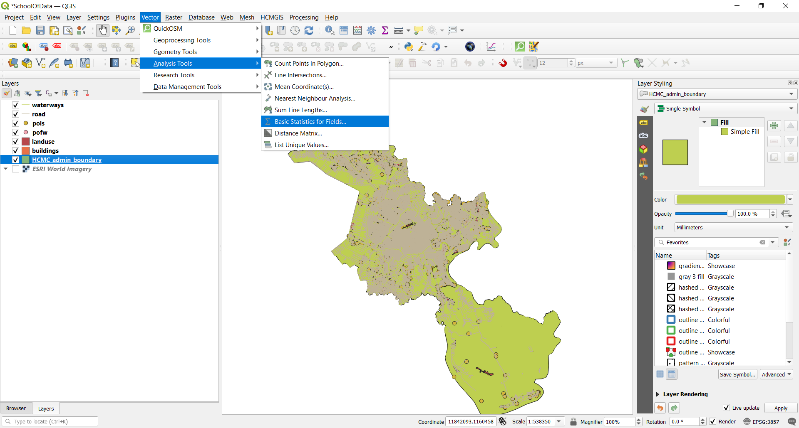
Hình 8.7 - Các thống kê cơ bản cho thuộc tính
Kết quả thống kê tuỳ thuộc vào loại trường dữ liệu chúng ta chọn và được tạo dưới dạng HTML file
Hãy chạy thống kê trên lớp giao thông và xem kết quả. Nhập các thông số như hình 8.8.

Hình 8.8 - Chuẩn bị chạy thống kê cơ bản cho lớp giao thông
File đầi ra ở dạng HTML, có thể mở bằng các trình duyệt như Firefox, Chrome, Safari,… như hình bên dưới:
Analyzed field: length
Count: 112539
Unique values: 34302
NULL (missing) values: 0
Minimum value: 0.12
Maximum value: 12042.59
Range: 12042.47
Sum: 16329154.959999874
Mean value: 145.09774353779466
Median value: 75.39
Standard deviation: 276.77048244197874
Coefficient of Variation: 1.9074761308737123
Minority (rarest occurring value): 0.12
Majority (most frequently occurring value): 37.63
First quartile: 41.845
Third quartile: 147.71499999999997
Interquartile Range (IQR): 105.86999999999998
Từ các thống kê cơ bản này, chúng ta thấy rằng có 112539 đường giao thông trong lớp giao thông, với đường ngắn nhất là 0.12 m và đường dài nhất là longest 12042.59 m. Chúng ta thấy rằng tổng số lượng đường giao thông tại Tp.HCM là khoảng 16329,155 km. Giả sử giá trị trung bình mean lớn hơn trung vị median, nó cho chúng ta thấy rằng nửa sau của tập dữ liệu chứa các đoạn đường dài hơn và lớn hơn các đoạn đường ở nửa đầu.
Chạy các thống kê cơ bản cho lớp nhà cho trường type của lớp buildings, chúng ta có kết quả như sau:
Count: 53888
Unique values: 54
NULL (missing) values: 48764
Minimum value: 3
Maximum value: Đội cảnh sát G
Minimum length: 0
Maximum length: 20
Mean length: 0.7534516033254157
Kết quả trông không giống bên trên, chúng ta không có mean, median hoặc standard deviation. Điều này là do trường thuộc tính mà chúng ta chạy thuật toán khác nhau - kiểu chuỗi so với kiểu số - trong trường hợp này là loại nhà. Chúng ta thấy rằng có 53888 căn nhà ở Tp.HCM, trong đó có 48764 căn nhà không có thông tin loại nhà, đồng thời có 54 loại nhà khác nhau.
Bước 3. Các kiểm tra cơ bản để tìm nhanh các lỗi trong dữ liệu.
Các tập dữ liệu hoàn hảo giống như khí lý tưởng trong vật lý. Không có điều gì là hoàn hảo, chỉ là gần hảo mà thôi. Do đó, trước khi thực hiện bất cứ phân tích nào để trích lọc thông tin, ít nhất một số kiểm tra cơ bản là cần thiết để làm sạch dữ liệu.
Có nhiều loại lỗi có thể ảnh hưởng đến châ1t lượng dữ liệu, trong trường hợp phân tích không gian, ảnh hưởng của chúng lên kết quả cuối cùng có thể quan trọng ít nhiều. Ví dụ, nếu bạn sử dụng dữ liệu không gian địa lý để tìm lộ trình từ điểm A đến điểm B bằng ô tô, thì việc có lớp giao thông hoàn chỉnh với các thuộc tính như đường một chiều hoặc đườc cấm là rất cần thiết để có một kết quả khả thi. Tuy nhiên, nếu là lộ trình đi bộ, thì các thông tin này là không quan trọng.
Khi nói đến lỗi dữ liệu không gian, có 02 khái niệm cần nắm rõ:
Accuracy - Độ chính xác là mức độ mà thông tin trên bản đồ khớp với các giá trị trong thế giới thực về cả không gian và thuộc tính
Precision - Độ chính xác phép đo đề cập đến mức độ đo lường và độ chính xác của mô tả trong tập dữ liệu không gian địa lý
An error - lỗi bao gồm cả imprecision và inaccuratacy. Data quality - Chất lượng dữ liệu đề cấp đến mức độ của precision và accuracy của tập dữ liệu và nó thường được thể hiện trong các báo cáo chất lượng dữ liệu.
Phân tích và làm sạch một tập dữ liệu không gian địa lý có thể rất tốn thời gian và nặng nề, tuy nhiên - như trong ví dụ trên - nó rất quan trọng. Phần này trình bày một số chức năng GIS cho phép người dùng thực hiện các kiểm tra nhanh trên dữ liệu vector và đưa ra một số kết luận sơ bộ về chất lượng dữ liệu.
Kiểm tra Topology.
QGIS cung cấp chức năng cho phép người dùng thực hiện một chuỗi các kiểm tra topology trên các tập dữ liệu được tải trong QGIS, được gọi là Topology Checker. Nó có thể được kích hoạt từ panels (Hình 8.9.a) và sau khi được kích hoạt như Hình 8.9.b


Hình 8.9.a - Topology checker panel; b - Topology checker window
Để định nghĩa các luật topology, kích chuột vào icon thứ ba để mở cửa sổ như Hình 8.10

Hình 8.10 - Topology rule settings window
Chúng ta sẽ thiết lập một số luật cho các layer đã tải vào QGIS project, xem xét các đối tượng trong thế giới thực mà chúng mô tả - giao thông, nhà, thuỷ hệ.
Cấu hình Topology rất đơn giản, vì các luật có thể được áp dụng tuỳ theo layer được chọn từ danh sách các layer có trong project, như hình 8.11

Hình 8.11 - Topology rules dropdown theo các layer được chọn
Chọn các luật topology được mô tả trong hình 8.12, sau đó chọn icon thứ nhất trong cửa sổ để chạy và đợi xem kết quả.

Hình 8.12 - Chọn các luật topology
Sau khi chạy topology check như hình 8.13

Hình 8.13 - Kết quả kiểm tra Topology
Ở phía góc dưới bên phải, cửa sổ topology checker liệt kê tất cả các lỗi được xác định dựa trên các luật mà chúng ta đã định nghĩa ở bước trên. Nếu chọn “Show errors”, các lỗi sẽ được tô màu đỏ trong map canvas. Kích đúp chuột vào một lỗi để di chuyển nhanh đến vị trí lỗi trên bản đồ.
Quy trính để chỉnh sửa các lỗi dữ liệu, có thể là lỗi hình học (duplicates, gaps,…) hoặc lỗi thuộc tính (nhập thiếu, lỗi chính tả,…) được gọi là làm sạch dữ liệu - rất cần thiết nhưng cũng mất thời gian. Mặc dù có các chức năng hỗ trợ làm sạch bán tự động, thường cần phải có sự can thiệp của người dùng. Ví dụ, trong Hình 8.14, chúng ta đã zoom tới một lỗi trong lớp POI (Điểm tham quan), một điểm bị trùng lặp (duplicated). Có thể thấy rằng, có 02 điểm đều cùng thể hiện một quán cafe, sự khác biệt nằm trong bảng thuộc tính - có 01 điểm thực sự là quán cafe và một là “monument”.

Hình 8.14 - Lỗi duplicated của lớp POI
Trong trường hợp cụ thể này, quyết định của người dùng có thể là xoá điểm duplicated này, vì nó có thể phát sinh lỗi cho các phân tích không gian sâu hơn. Ví dụ, nếu nhà quản lý muốn biết có bao nhiêu nhà hàng và cafe trong một khu vực nào đó, thì điểm duplicate này sẽ phát sinh lỗi trong kết quả phân tích và có thể dẫn đến các quyết định sai lầm.
Do đó, chúng ta sẽ xử lý các điểm trùng lặp này một cách tự động bằng chức năng có sẵn của QGIS - Delete duplicate geometries - trong processing toolbox, như Hình 8.15

Hình 8.15 - Delete duplicate geometries cho lớp POI
Sau khi chạy thuật toán, cửa sổ hiển thị kết quả, nó chỉ ra 23 điểm trùng lặp, giống như công cụ topology checker, và nó thông báo đến người dùng là đã xoá tất cả các điểm trùng lặp, do đó lớp POI lúc này chỉ còn 20769 đối tượng. Sửa tên layer thành pois_cleaned. Lưu ý đây chỉ là lớp tạm, bạn có thể lưu thành file trong máy tính.

Hình 8.16 - Kết quả delete duplicate geometries
Lúc này, chạy lại topology checker với luật topology là “no geometric duplicates” cho lớp POI sẽ cho kết quả là 0 errors
Lưu ý! Thuật toán chỉ quan tâm đến yếu tố hình học only geometries, không quan tâm đến thuộc tính. Nếu trong trường hợp thuộc tính của các điểm duplicate này là khác nhau, người dùng sẽ không thể lựa chọn nên giữ lại đối tượng nào. Do đó, nếu muốn tất cả các thông tin được giữ lại, đầu tiên nó cần phải được sao chép vào tất cả các đối tượng, nên khi một đối tượng trùng lặp bị xoá thì không bị mất thông tin.
Chúng ta hãy chạy một topology check khác cho lớp nhà. Cấu hình các luật sau đây:
- No duplicate
- No invalid geometries

Hình 8.17a - Các rule trong Topology checker của lớp buildings
Chạy thuật toán.
Kết quả như Hình 8.17b.

Figure 8.17b - Kết quả topology check của lớp buildings
Xoá các đối tượng trùng lắp tương tự như trên (Hình 8.18a)
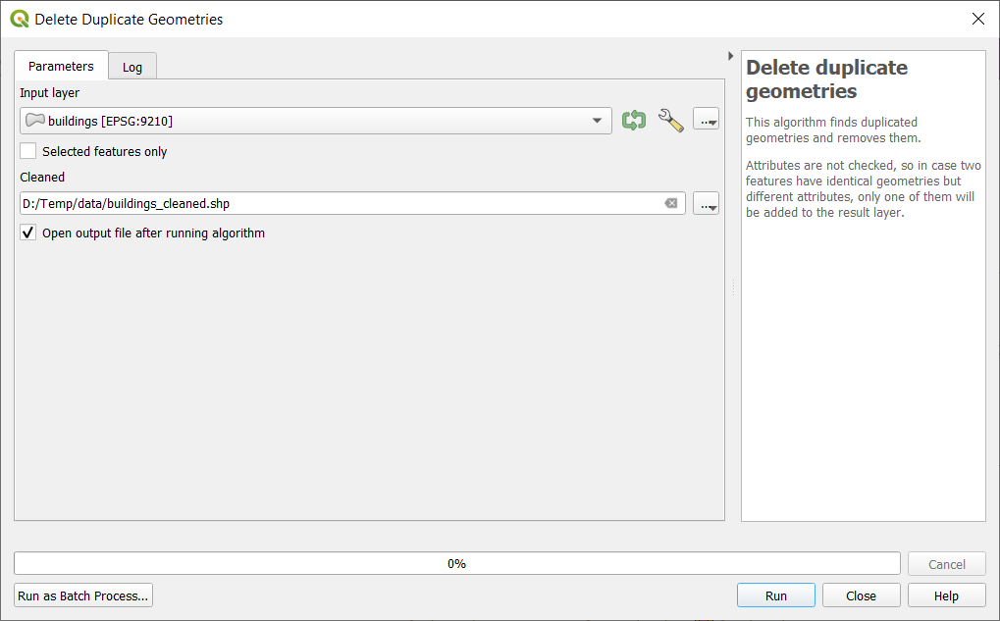
Hình 8.18a - Xoá các đối tượng trùng lắp của lớp buildings

Hình 8.18b - Hoàn thành xoá các đối tượng trùng lắp của lớp buildings

Hình 8.18c - Lớp buildings_cleaned sau khi xoá các đối tượng trùng lắp của lớp buildings
Bước 4. Xem kĩ hơn thông tin đính kèm với các lớp point, line và polygon.
Hãy chạy thêm một thuật toán để cho biết các thuộc tính của các lớp dữ liệu là gì. Sau khi chúng ta xác định số lượng đối tượng trong từng layer, hãy xem có bao nhiêu giá trị duy nhất ứng với các thuộc tính sau:
- layer buildings_cleaned - attribute type;
- layer pois_cleaned - attribute fclass;
- layer waterways - attribute fclass;
- layer pofw - attribute fclass;
- layer roads -attribute fclass;
- layer landuse - attribute fclass;
Truy cập Vector ‣ Analysis Tools ‣ List unique values (Hình 8.19_a)

Hình 8.19a - Chức năng List unique values cho vector layer
Trong cửa sổ giao diện, thêm các layer và thuộc tính theo danh sách bên trên như Hình 8.19b
")
Figure 8.19b - List unique values in a vector layer functionality (Batch Processing)
| Layer name | No. of unique values | Unique values |
| buildings_cleaned | 54 | villas;garage;NULL;Nhà_B1;public;church;shed;house;hangar;religious;3;stadium;gasometer;service;commercial;school;a\;mosque;office;manufacture;kindergarten;train_station;hotel;No;transportation;Pastoral_Center_of D;no;construction;retail;Đội cảnh sát G;industrial;hospital;college;warehouse;Sunrise_Riverside;clinic;roof;Đình Minh Phụng;pavilion;residential;university;terrace;civic;ACV Tower;storage_tank;dormitory;gazeebo;temple;market;tower;government;apartments;detached;chapel |
| pois_cleaned | 115 | restaurant;water_tower;stadium;furniture_shop;telephone;motel;kindergarten;swimming_pool;fountain;drinking_water;camera_surveillance;nightclub;bakery;public_building;jeweller;post_office;bicycle_shop;chemist;pitch;travel_agent;caravan_site;lighthouse;library;zoo;kiosk;pub;waste_basket;graveyard;clothes;memorial;community_centre;shelter;hairdresser;laundry;dentist;school;police;bicycle_rental;chalet;ruins;attraction;cinema;biergarten;convenience;guesthouse;beverages;post_box;computer_shop;town_hall;car_wash;food_court;veterinary;gift_shop;playground;sports_centre;fast_food;bank;garden_centre;stationery;sports_shop;viewpoint;toy_shop;car_dealership;museum;bookshop;supermarket;theatre;wayside_cross;greengrocer;hotel;department_store;camp_site;courthouse;artwork;hunting_stand;college;butcher;water_well;cafe;bar;pharmacy;monument;tourist_info;theme_park;doctors;comms_tower;optician;mobile_phone_shop;park;shoe_shop;doityourself;bench;observation_tower;wastewater_plant;outdoor_shop;picnic_site;beauty_shop;atm;arts_centre;newsagent;hospital;ice_rink;mall;recycling;hostel;florist;vending_any;embassy;fire_station;university;toilet;castle;car_rental;tower;alpine_hut |
| waterways | 4 | canal;stream;drain;river |
| pofw | 7 | taoist;muslim_sunni;buddhist;christian;christian_methodist;christian_catholic;christian_evangelical |
| roads | 23 | path;tertiary_link;primary_link;track_grade1;pedestrian;track;service;motorway_link;unknown;footway;track_grade2;living_street;tertiary;steps;secondary;cycleway;secondary_link;residential;motorway;primary;trunk;trunk_link;unclassified |
| landuse | 16 | residential;commercial;orchard;industrial;farmyard;allotments;forest;cemetery;meadow;retail;park;farmland;grass;recreation_ground;military;scrub |
Bảng 8.1 - Bảng liệt kê số lượng của từng giá trị duy nhất ứng với thuộc tính được chọn
Để phân tích sâu hơn các thuộc tính của vector layer, chúng ta sẽ sử dụng Group Stats plugin. Nó được phát triển để hỗ trợ các tính toán thống kê cho các nhóm đối tượng trong một vector layer, rất hữu dụng để hiểu thêm về dữ liệu cũng như phát hiện các lỗi có thể có trong các thuộc tính
Đầu tiên, đảm bảo rằng bạn đã cài đặt và kích hoạt Group Stats plugin. Sau đó, truy cập Vector ‣ Group Stats ‣ GroupStats.
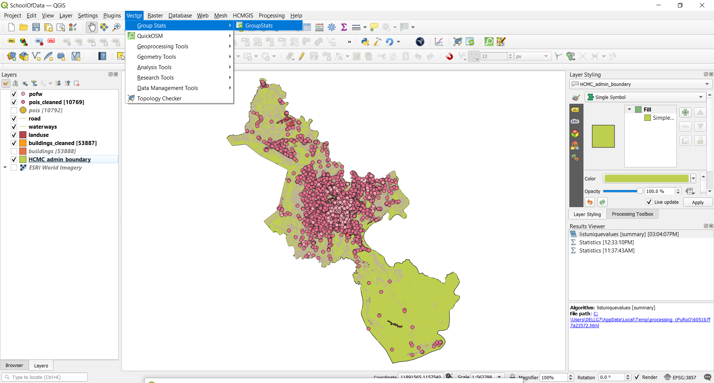
Hình 8.20a - Group Stats plugin
Cửa sổ Group Stats xuất hiện như Hình 8.20b.
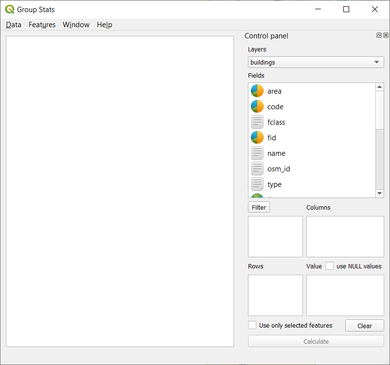
Hình 8.20b - Cửa sổ Group Stats
Đối với mỗi phân tích đã thực hiện trước đây, chúng ta thấy rằng đối với lớp buildings, chúng ta có 54 loại (type), nhưng mỗi loại có bao nhiêu đối tượng và diện tích xây dựng cho mỗi loại? Có bao nhiêu không gian cho trường học, chợ, nhà ở? Group Stats có thể giúp chúng ta trả lời câu hỏi này. Ở bên phải cửa sổ, có một control panel để chọn các thông tin cần tính toán cũng như cách sắp xếp dữ liệu. Sử dụng kéo - thả, theo sự sắp xếp trong Hình 8.21, và chọn calculate

Hình 8.21 - Chạy GroupStats cho lớp buildings.
Nhìn vào kết quả, chúng ta có thể trích lọc các thông tin quan trọng từ dữ liệu. Ví dụ, cho mục đích đất ở - residential, chúng ta có 973 toà nhà với tổng diện tích xây dựng là 204860 m2, khoảng 20.5 ha. Chúng ta cũng thấy rằng toà nhà lớn nhất có diện tích 8018.32 m2, toà nhà nhỏ nhất có diện tích 18.3886 m2. Và chúng ta có thể tiếp tục phân tích cho các thông tin giá trị hơn nữa.
Một phân tích thú vị khác có thể chạy trên lớp giao thông. Hình 8.22 cho thấy cách tính toán chiều dài của các đường giao thông theo từng loại đường khác nhau (primary, residential, motorway,…) và tốc độ tối đa cho phép.

Hình 8.22 - Chạy GroupStats cho lớp giao thông.
Câu hỏi
- Metadata có quan trọng không?
- Yes, because it gives insight into the geographical data that otherwise one could not gain.
- _No, it’s just bureaucracy. _
- Topology is relevant to the geometry or to the attribute table of a vector layer?
- _to the geometry of the vector layer. _
- What is more important, the geometry or the attribute data?
- Geometry.
- Attribute data.
- Both.
**Phase 2: Giới thiệu vector processing **
Phase 1 của Module này đã giới thiệu ngắn gọn các bước để người dùng có được những hiểu biết căn bản về dữ liệu không gian của mình.
Phase 2 sẽ hướng dẫn bạn sâu hơn về xử lý dữ liệu vector để trích lọc các thông tin giá trị, hỗ trợ ra quyết định. Theo các khái niệm đã được trình bày trong phần đầu của Module, geoprocessing là bất cứ xử lý nào áp dụng cho dữ liệu địa lý nhằm thu được một tập dữ liệu dẫn xuất, mở ra những hiểu biết mới về dư4 liệu. Và đây là những gì chúng tôi cố gắng thực hiện trong phần tiếp theo.
Có nhiều phép toán có thể thực hiện trên một hoặc nhiều tập dữ liệu không gian và trong bước đầu tiên này, chúng ta sẽ chạy một số phép xử lý thông dụng nhất để hiểu cách hoạt động của nó.
Buffer. Hãy tưởng tượng bạn cần phân tích một điều luật mới yêu cầu rằng trong vòng bán kính 30m tính từ cơ sở tôn giáo thì không cho phép công trình xây dựng nào khác. Bạn sẽ muốn xem chính xác những khu vực này là gì và có thể thậm chí nó chiếm diện tích bao nhiêu. Bước đầu tiên là định nghĩa một buffer - vùng đệm xung quanh các cơ sở tôn giáo: Vector ‣ geoprocessing tools ‣ buffer. và nhập các thông số như hình 8.23:
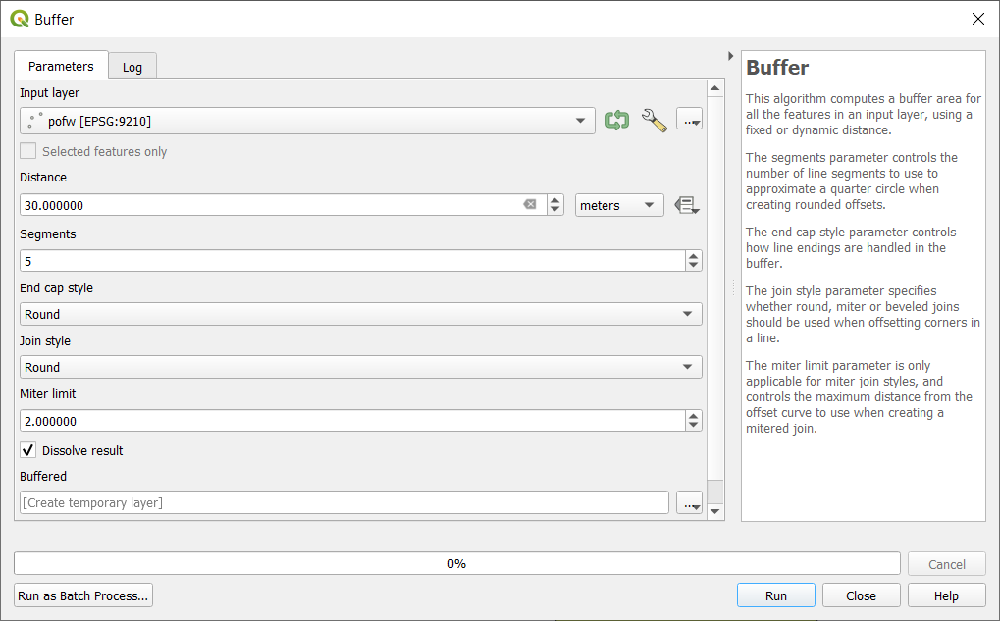
Hình 8.23 - Nhập thông số 30m buffer xung quanh cơ sở tôn giáo - pofw
Chi tiết kết quả trong hình 8.24:

Hình 8.24 - Chạy buffer trên một lớp điểm
Để hoàn tất trả lời cho câu hỏi ban đầu, bước tiếp theo là tính diện tích của tất cả các buffer và tính tổng của chúng (xem Phase 1, bước 4) - hình 8.25
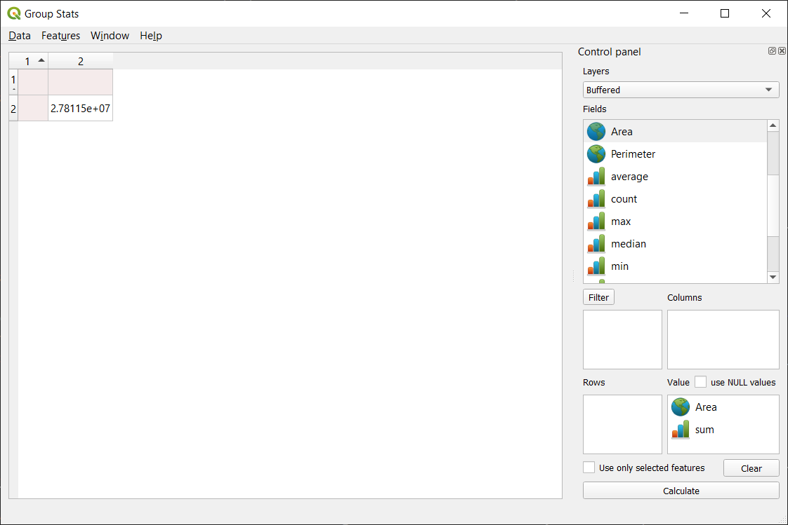
Hình 8.25 - Tính diện tích cho lớp buffer vừa tạo, sau đó sử dụng GroupStats để tính tổng diện tích.
Clip. Hãy tưởng tượng bạn muốn biết tất cảc các khu công nghiệp trong khu vực và bao nhiêu toà nhà trong phạm vi đó. Kiểm tra trực quan dữ liệu vector, bạn thấy rằng có một số khu công nghiệp chứa một số toà nhà. Bạn muốn tách các toà nhà và sử dụng chúng sau này. Đầu tiên là chọn tất cả các đối tượng trong lớp landuse có thuộc tính industrial (Xem lại Module 6). Sau đó, vào Vector ‣ Geoprocessing tools ‣ Clip và chọn layer được clip là buildings_cleaned. Kết quả như Hình 8.27_b
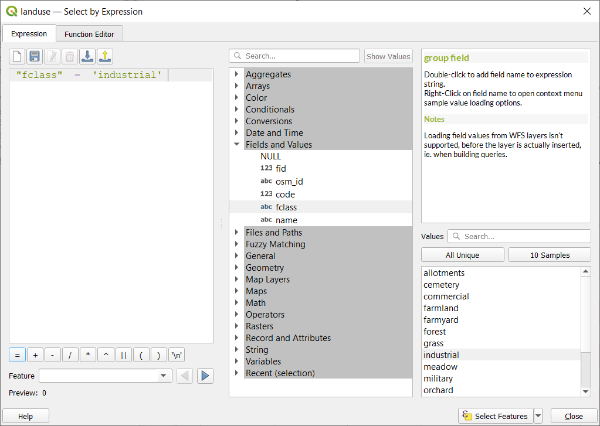
Hình 8.26a - Chọn landuse với fclass = industrial.
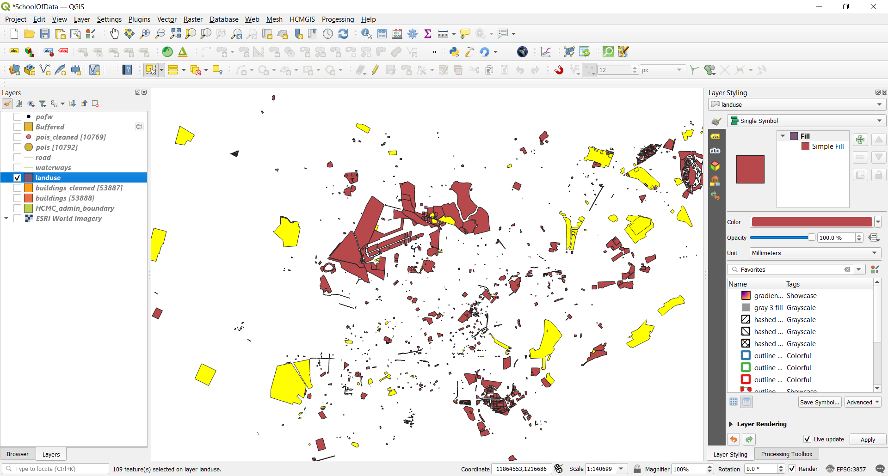
Hình 8.26b - Kết quả chọn landuse với fclass = industrial.
Chạy công cụ Clip với tuỳ chọn Selected features only cho Overlay layer (landuse), để đảm bảo chỉ thực hiện clip trên các đối tượng được chọn, và làm cho thời gian tính toán nhanh hơn.

Hình 8.27a - Chạy chức năng Clip
Kết quả như Hình 8.27b. Các buildings được clup có màu xanh. Có bao nhiêu industrial buildings đã được clip và tổng diện tích của chúng là bao nhiêu?

Figure 8.27b - Kết quả sau khi clip
Thiessen (Voronoi) polygons. Hãy tưởng tượng bạn phải đưa ra một loạt các quyết định hành chính dựa trên số lượng trường học và phạm vi đáp ứng của chúng trong khu vực. Phân tích không gian có thể hỗ trợ điều này. Bạn có thể bắt đầu bằng việc tính toán Thiessen polygon. Thiessen (Voronoi) là một phân hoạch của tập điểm P thành n vùng. Mỗi vùng ứng với một và chỉ một điểm thuộc P sao cho nếu điểm q thuộc vùng ứng với p thì khoảng cách từ q đến p là nhỏ nhất so với các điểm khác thuộc P. Một ứng dụng của Thiessen polygon là trong ngành khí tượng: có thể tính lượng mưa cho một khu vực với hữu hạn các trạm đo mưa rời rạc bằng cách sử dụng Thiessen polygon.
Để trả lời câu hỏi trên, chúng ta sẽ chỉ chạy thuật toán cho các điểm POI có thuộc tính fclass là school bằng cách chọn đã được hướng dẫn trong Module 6. Trong trường hợp lớp pois_cleaned chúng ta sẽ chọn được 418 trường học. Sau đó, truy cập Vector ‣ Geometry Tools ‣ Voronoi Polygons... Sau khi thiết lập các tham số - chọn point layer cần tạo Voronoi polygons, Buffer region là 30%, kết quả sẽ như Hình 8.28d.

Hình 8.28a - Lọc/ chọn các POI là trường học
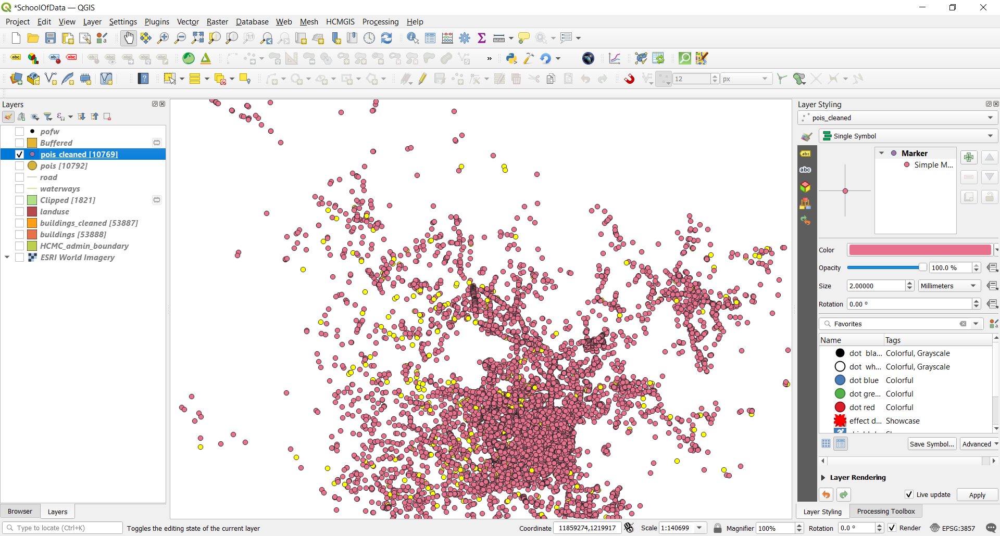
Hình 8.28b - Các trường học được lọc/ chọn từ POI layer

Hình 8.28c - Nhập các tham số tạo Voronoi polygon

Hình 8.28d - Kết quả sau khi tạo Voronoi polygon
Đôi khi, nhu cầu thiết yếu đặt ra yêu cầu phải có thông tin trong các khu vực nhỏ hơn, được xác định rõ ràng và bằng nhau chứ không phải cho toàn bộ một khu vực rộng lớn, chẳng hạn như một quốc gia hoặc một thành phố lớn. Do đó, dữ liệu cần được phân tích và trực quan hóa bằng cách cắt nhỏ, được xác định rõ ràng, cho phép so sánh với nhau mà nếu không có một tham chiếu chung có thể sẽ khó khăn.
Giả định rằng chúng ta phải trình bày một báo cáo cho phép so sánh từng kích thước 10X10 km trên mỗi đơn vị hành chính, bao gồm:
- Mật độ mảng xanh (công viên, rừng);
- Tổng chiều dài đường giao thông;
- Tổng chiều dài sông suối;
- Tổng số công trình công cộng (trường học, nhà trẻ, bệnh viện, cơ quan hành chính,…)
Chúng ta thấy rằng có những công cụ có thể hỗ trợ chún ta trong việc tính toán tổng diện tích bề mặt của một loại đối tượng nhất định, tuy nhiên trước tiên là tạo các cell grid kích thước 10x10 km bằng cách vào Vector ‣ Research Tools ‣ Create grid.. và nhập các tham số như sau:
- Grid type - Rectangle (polygon)
- Grid extent - HCMC_admin_boundary layer
- Horizontal spacing - 10 km
- Vertical spacing - 10 km

Hình 8.29a - Tạo grid 10kmx10km cho Tp. Hồ Chí Minh
Kết quả tạo grid như Hình 8.29b

Hình 8.29b - Grid kích thước 10X10km cho Tp.HCM
Để trả lời các câu hỏi trong bài tập này, chúng ta cần thực hiện những việc sau:
- Mảng xanh (công viên, rừng) và đất xây dựng
- green spaces (parks, forests) built-up space per unit ratio:
Mảng xanh và đất xây dựng là dữ liệu được chứa trong landuse layer (polygon). Để biết chính xác các ‘mảng xanh’, chúng ta cần biết các loại hình sử dụng đất trong lớp landuse bằng công cụ List unique values với trường fclass và tìm ra các loại hình sử dụng đất là mảnh xanh: meadow, grass, nature_reserve, park, forest, tương tự cho các ‘đất xây dựng’ như: retail, commercial, industrial, residential. Hình 8.30b
Green spaces and built-up spaces is data contained by the landuse vector layer, polygon type. To know exactly what are the ‘green spaces’ we need to see what are the categories enclosed in the dataset. For that, we run List unique values algorithm on the fclass attribute and find out that we have the following ‘green’ classes: meadow, grass, nature_reserve, park, forest and the following ‘built-up space’ classes: retail, commercial, industrial, residential. Hình 8.30b biểu diễn trực quan các lựa chọn này:

Hình 8.30a - Lọc các mảng xanh và đất xây dựng ở Tp.HCM

Hình 8.30b - Phân bố không gian của mảng xanh và đất xây dựng của Tp.HCM
Bước tiếp theo là x1c định có bao nhiêu mảng xanh và đất xây dựng cho mỗi ô có kích thước 10x10 km. Để có được điều này, chúng ta sẽ intersect 2 lớp polygon. Công cụ này sẽ trích lọc những phần chồng lắp cúa các đối tượng trong Input layer - lớp landuse và Overlay layer - lớp grid. Truy cập Vector - Geoprocessing Tools - Intersection hoặc tìm kiếm từ khoá Intersection trong Processing Toolbox hoặc Locator Bar. Thiết lập các tham số như Hình 8.31

Hình 8.31 - Các tham số cho Intersect
Kết quả như Hình 8.32.

Hình 8.32 - Kết quả Intersection giữa landuse và grid layer
Bây giờ, ứng với mỗi ô 10X10 km, chúng ta có các loại hình sử dụng đất tương ứng. Bảng thuộc tính cũng lưu trữ thông tin này vì mỗi ô grid có một mã định danh duy nhất như Hình 8.33.

Hình 8.33 - Các loại hình sử dụng đất tương ứng với từng ô grid và bảng thuộc tính đi kèm.
Bây giờ, chúng ta đã có các loại hình sử dụng đất trên mỗi ô 10x10 km, chúng ta sẽ tiếp tục tách các đối tượng của thuộc mảng xanh và thuộc đất xây dựng như đã xác định ở trên tương ứng với từng ô grid. Theo đó, đối với mảng xanh, chúng ta sẽ chọn tất cả các đối tượng có thuộc tính fclass là meadow, grass, nature_reserve, park, forest. Nhập công thức sau vào Select by Attribute Table: ` “fclass” = ‘meadow’ or “fclass” = ‘grass’ or “fclass” = ‘nature_reserve’ or “fclass” = ‘park’ or “fclass” = ‘forest’, hoặc đơn giản hơn là: “fclass” in (‘meadow’, ‘grass’, ‘nature_reserve’, ‘park’, ‘forest’). Kết xuất các đối tượng được chọn với tên lớp là green_spaces_gridded (Xem lại Module 6). Đừng quên chọn **Save only selected features**. Layer green_spaces_gridded sẽ có 935 đối tượng. Thực hiện tương tự cho đất xây dựng. Chọn các đối tượng trong landuse có thuộc tính fclass là retail, commercial, industrial, residential. Nhập công thức sau vào Select by Attribute Table: “fclass” = ‘retail’ or “fclass” = ‘commercial’ or “fclass” = ‘industrial’ or “fclass” = ‘residential’.`, sau đó kết xuất các đối tượng được chọn sang lớp builtup_spaces_gridded (trong trường hợp này có 629 đối tượng).
Thay vì sử dụng Select By Attribute, bạn có thể dùng bộ lọc - filter.

Hình 8.34a - Chọn các mảng xanh.

Hình 8.34b - Kết quả chọn các mảng xanh.

Hình 8.34c - Kết quả chọn các mảng xanh và đất xây dựng.
Tiếp theo, tính toán diện tích của từng đối tượng trong 2 layer này. Mở Attribute table của từng layer và thêm vào một cột diện tích - area với công thức round($area,2) trong Field Calculator (Xem lại Module 6). Tuy nhiên, grid 10x10 km của Tp.HCM có số lượng cell là 72, do đó chúng ta cần tóm tắt diện tích của tất cả các loại mảng xanh (forests, parks,…) và đất xây dựng (commercial, residential,…) và kết nối tương ứng với tất cả 72 grid cell này. Để làm điều này, chúng ta sử dụng GroupStats plugin để tính tổng theo từng grid_id cho từng loại mảng xanh cũng như đất xây dựng. Đối với green_spaced_gridded layer, nhập các tham số như Hình 8.34e

Hình 8.34d - Tính diện tích cho từng đối tượng.
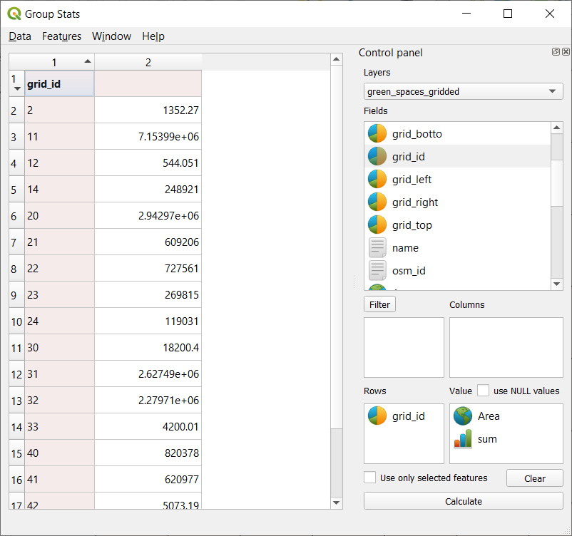
Hình 8.34e - Các tham số GroupStat parameters để tính tổng diện tích mảng xanh cho từng ô 10x10 km.
Sau đó, lưu kết quả thành .csv file với tên green_spaces_gridded bằng cách truy cập Data ‣ Save all to CSV file.
Chạy GroupStats cho đất xây dựng theo cách tương tự và lưu kết quả thành .csv file với tên builtup_spaces_gridded.
Tiếp theo, chúng ta sẽ tính toán thống kê 2 csv file này bằng GroupStats Plugin (Layer ‣ Add layer ‣ Add delimited text layer - xem lại Module 2).
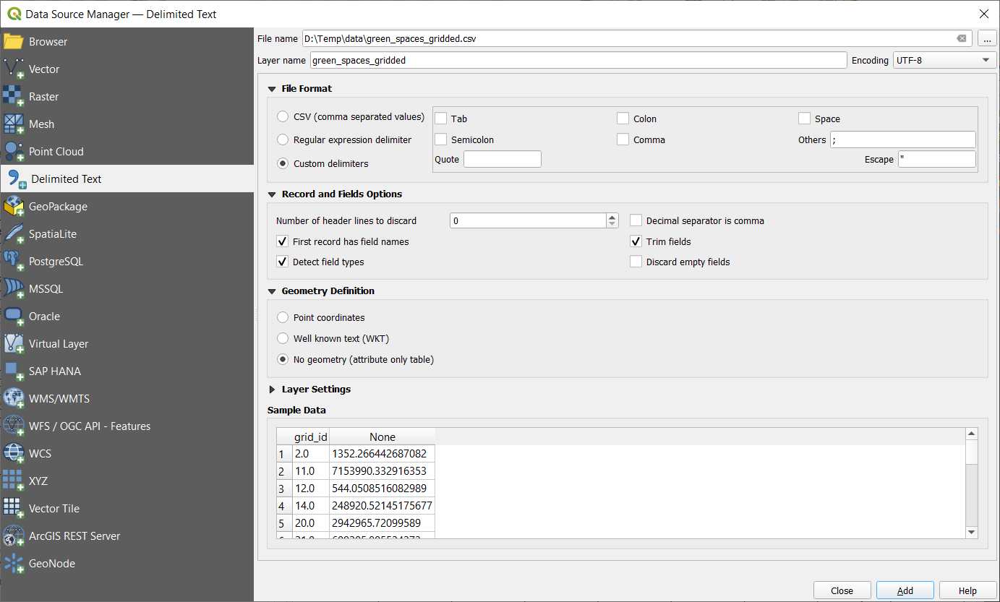
Hình 8.35a - Tải green_spaces_gridded.csv
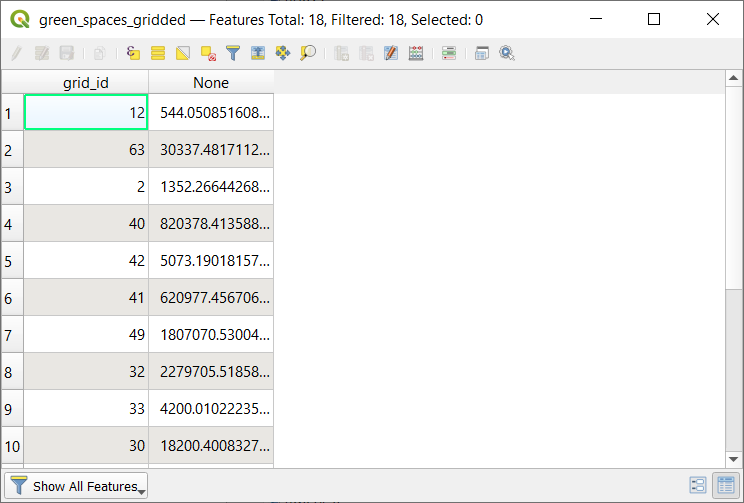
Hình 8.35b - Bảng thuộc tính của green_spaces_gridded
Tiếp theo, chúng ta cần join lớp green_spaces_gridded và built-up_spaces_gridded với mỗi ô 10x10 km. Để làm điều đó, chọn grid layer trong Layers Panel, mở cửa sổ Porperties và chọn Joins. Chức năng này cho phép join với layer/ table khác thông qua một thuộc tính chung. Trong trường hợp của chúng ta, sử dụng thuộc tính grid_id để join, tổng diện tích mảng xanh và diện tích xây dựng cho 2 csv file ở bước trên.
Trong cửa sổ Join, kích chọn nút  , nhập các tham số như Hình 8.35_c cho green_spaces_gridded.
, nhập các tham số như Hình 8.35_c cho green_spaces_gridded.

Hình 8.35c - Nhập các tham số để join thông qua thuộc tính chung grid_id tổng diện tích mảng xanh và diện tích đất xây dựng cho mỗi ô 10x10 km
Làm tương tự cho buitup_spaces_gridded.
Kết quả của hai phép join được thể hiện trong bảng thuộc tính như Hình 8.36_b. Chúng ta sử dụng grid_id là thuộc tính chung cho cả hai phép join, và có thể kiểm tra để đảm bảo rằng các trường id, builtupgrid_id và greengrid_id có giá trị như nhau.
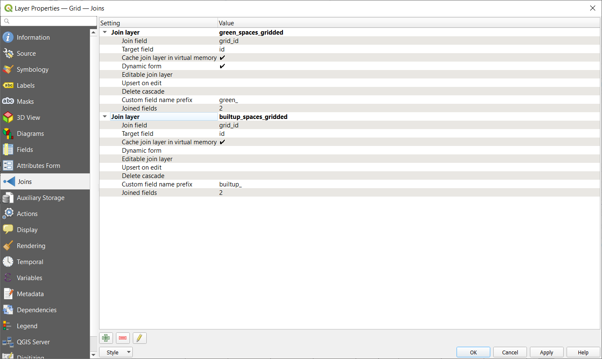
Hình 8.36a - green_spaces_gridded.csv và buitup_spaces_gridded.csv được join và Grid.

Hình 8.36b - Bảng thuộc tính của Grid với tổng diện tích mảng xanh và diện tích xây dựng trên mỗi ô 10x10 km.Chúng ta sẽ tính toán bằng Field Calculator với công thức như sau: round(100*green_None/100000000, 5) and round(100*builtup_None/100000000, 5). Tiếp theo, chúng ta thêm một thuộc tính mới để tính toán GreenPre/BuiltupPer, từ đó trả lời cho câu hỏi: tỉ lệ mảng xanh/ đất xây dựng cho mỗi ô 10x10 km. Để có cái nhìn tổng quan rõ ràng hơn về dữ liệu, trong trường hợp không có diện tích đất xây dựng trong một ô nào đó - chúng ta sẽ thay giá trị 1000 vào bảng thuộc tính; trong trường hợp không có diện tích mảng xanh trong ô, chúng ta sẽ thay giá trị 999; trong trường hợp cả hai giá trị đều NULL thì giá trị là 1001. Chúng ta tính toán cho thuộc tính mới là ratio với công thức sau trong Field Calculator:
CASE
WHEN (greenPer is NULL) and (builtupPer is not NULL) then 999
WHEN (builtupPer is NULL) and (greenPer is not NULL) then 1000
WHEN (greenPer is NULL) and (builtupPer is NULL) then 1001
ELSE round(greenPer / builtupPer, 5)
END
Kết quả cuối cùng như Hình 8.37e.

Hình 8.37a - Tính tỉ lệ mảng xanh trong mỗi ô 10x10 km

Hình 8.37b - Tỉ lệ mảng xanh và đất xây dựng đã được tính toán.

Hình 8.37c - Tính toán tỉ lệ mảng xanh và đất xây dựng

Hình 8.37d - Tỉ lệ mảng xanh và đất xây dựng đã được tính toán.

Hình 8.37e - Tỉ lệ của mảng xanh/ đất xây dựng trong mỗi ô 10x10 km.
- Tổng chiều dài của đường giao thông và sông kênh cho mỗi ô lưới 10x10 km;
Để làm bài tập này, QGIS cung cấp một công cụ tính toán số line và tổng chiều dài của chúng trong mỗi đối tượng của polygon layer. Kết quả đầu ra có cùng số đối tượng với polygon layer nhưng có thêm 02 thuộc tính tổng chiều dài và số lượng line trong mỗi đối tượng polygon. Truy cập Analysis Tools - Sum Line Lengths và nhập các tham số như sau:
- polygons - Grid
- lines - roads
- lines length field name - roadsL
- lines count field name - roadsC
Bạn có thể tạo một temporary layer hoặc lưu lại thành dạng file trên máy tính. Kết quả như Hình 8.38c.

Hình 8.38a - Nhập các tham số cho Sum Line Lengths
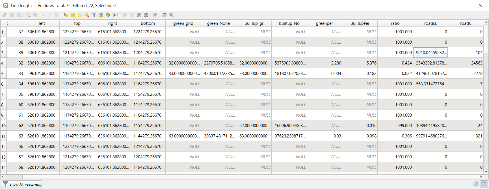
Hình 8.38b - Tổng chiều dài và số lượng đường giao thông trên mỗi ô

Hình 8.38c - Phân bố không gian của các ô 10x10 km theo tổng chiều dài đường giao thông
Bây giờ, hãy làm tương tự cho lớp sông - waterways, sau đó lưu layer lại với tên là line_lengths_gridded. Kết quả như Hình 8.39.

Hình 8.39 - Phân bố không gian của các ô 10x10 km theo tổng chiều dài sông
- Tổng số công trình công cộng (schools, kindergartens, hospitals, town halls,…) ứng với mỗi ô
Để biết tổng số công trình công cộng trong mỗi ô 10x10 km, chúng ta sẽ sử dụng pois_cleaned layer. Đầu tiên, sử dụng Select by Expression để xác định toà nhà nào là công trình công cộng. Chúng ta sẽ chọn các đối tượng sau từ lớp pois_cleaned: "fclass" = 'town_hall' or "fclass" = 'kindergarten' or "fclass" = 'hospital' or "fclass" = 'doctors' or "fclass" = 'fire_station' or "fclass" = 'community_centre' or "fclass" = 'stadium' or "fclass" = 'museum' or "fclass" = 'school' or "fclass" = 'theatre'. Đơn giản hơn, chỉ cần gõ "fclass" in ('town_hall', 'kindegarten', 'hospital', 'doctors', 'fire_station', 'community_centre', 'stadium', 'museum', 'school', 'theatre'). Kết quả là có 624 đối tượng thoả điều kiện chọn.

Hình 8.40a - Chọn các công trình công cộng từ lớp POI

Hình 8.40b - Các công trình công cộng được chọn
Để trả lời cho câu hỏi, chúng ta sẽ dùng công cụ Vector ‣ Analysis Tools ‣ Count points in polygon để đếm số lương các điểm nằm trong từng đối tượng của polygon layer. Kết quả là có một polygon layer mới được tạo ra giống như polygon layer đầu vào nhưng có thêm thuộc tính là tổng số điểm trong mỗi đối tượng. Chọn poing layer là pois_cleanded với tuỳ chọn Selected features only và polygon là Grid layer. Lưu kết quả thành file với tên grid_info.

Hình 8.40c - Đếm số lượng công trình công cộng cho mỗi ô 10x10 km
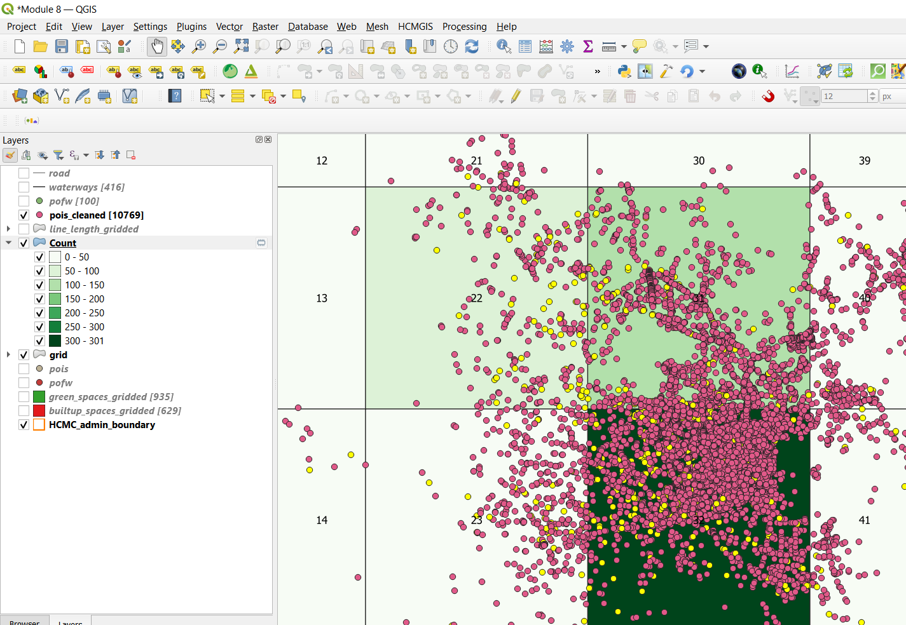
Hình 8.40d - Phân bố không gian của mật độ các công trình công cộng trong mỗi ô 10x10 km.
Câu hỏi
Q: Nếu bạn có 2 vector layer - một layer là ranh giới hành chính của tỉnh/ thành phố bạn đang làm việc, và layer thứ hai là mạng lưới giao thông toàn quốc. Bạn sẽ dùng công cụ xử lý nào để trích lọc các đường giao thông trong phạm vi hành chính của tỉnh/ thành phố: buffer hay clip?
A: Clip.
Q. Công cụ buffer có hữu ích trong trường hợp sau hay không: Bạn có một polygon layer là các di tích lịch sử ở địa phương của bạn, và bạn muốn vẽ một khu vực bảo vệ xung quanh mỗi di tích có bán kính 50m?
A: Yes
Q: Bạn sẽ sử dụng một trong ba công cụ xử lý nào sau đây để merge 2 vector layer có cùng loại đối tượng (point, line hoặc polygon) ? Voronoi polygons, dissolve hay intersection?
A: Dissolve.
Phase 3: Thống kê không gian (Geostatistics). Nội suy (Interpolation) - ước tính dữ liệu bị thiếu
Phần cuối của Module này giới thiệu khái niệm về ước lượng dữ liệu. Chúng ta đã quen với việc ước lượng gần như mỗi ngày ở nhiều chủ đề khác nhau, ví dụ như mất bao nhiêu thời gian để đi từ nhà đến cơ quan trong một số điều kiện nhất định. Chúng ta cũng quen với việc đưa ra các dự đoán tốt nhất dựa trên kinh nghiệm và dự cảm. Tuy nhiên, trong việc ước lượng dữ liệu bị thiếu, dự đoán tốt nhất được thay thế bằng các phương trình toán học được xác định rất rõ ràng với những hạn chế đã biết.
Chủ đề này đòi hỏi kiến thức đáng kể về thống kê và kết quả phải luôn xem xét đến những hạn chế của chúng.
Chúng tôi sẽ giới thiệu một ví dụ ngắn về ước lượng dữ liệu như là một bước chuyển cho Module tiếp theo - Raster Data Processing.
Nội suy - Interpolation là một xử lý toán học mà qua đó có thể ước tính các giá trị bị thiếu dựa trên một số hữu hạn các giá trị đã có. Ví dụ trong lĩnh vực quan trắc khí tượng, dữ liệu về nhiệt độ bề mặt và lượng mưa chỉ có thể được đo tại các trạm quan trắc khí tượng rời rạc và hữu hạn chứ không phải trên toàn bộ bề mặt. Tuy nhiên, nhiệt độ hay lượng mưa là những hiện tượng liên tục nên phải ước tính các giá trị cho toàn bộ bề mặt bằng phương pháp nội suy.
Cơ sở của phép nội suy dựa trên giả thiết là các đối tượng phân bố có sự tương quan về mặt không gian; Nói cách khác, những sự vật/ hiện tượng gần nhau có xu hướng có những đặc điểm giống nhau.
Có nhiều phương pháp nội suy được hỗ trợ trong các phần mềm GIS, việc lựa chọn phương pháp nội suy tốt nhất trong từng trường hợp cụ thể tuỳ thuộc vào tính cụ thể của dữ liệu, sự vật/ hiện tượng mà nó biểu diễn và hiểu biết về thống kê không gian của người dùng khi sử dụng phép nội suy.
Để kiểm tra nhanh về các phương pháp nội suy có sẵn trong QGIS, vào Processing Toolbox và tìm kiếm với từ khoá interpolation như Hình 8.41
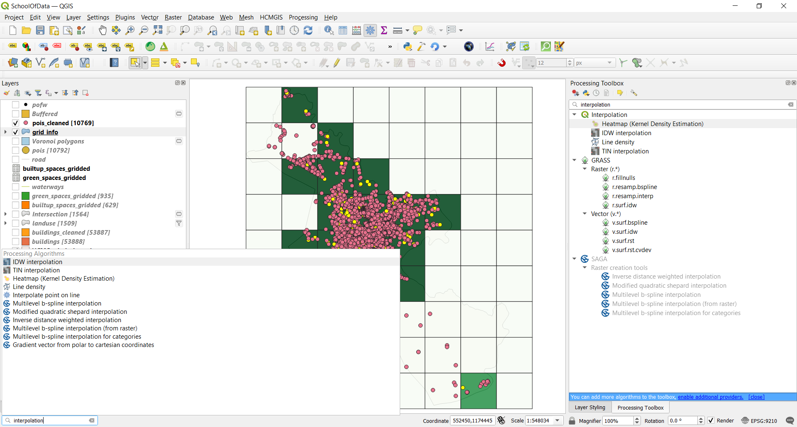
Hình 8.41 - Các phương pháp nội suy có sẵn trong QGIS
Như hình trên chp thấy, trong QGIS người dùng cũng có thể truy cập đến các công cụ nội suy khác từ GRASS hoặc SAGA - các phần mềm rất mạnh mẽ được tích hợp vào QGIS.
Đi sâu vào khía cạnh toán học của mỗi phương pháp nội suy nằm ngoài phạm vi của Module này. Tuy nhiên, với mục đích thực hành, chúng ta sẽ mô phỏng phép nội suy dữ liệu lượng mưa để có được một tập dữ liệu liền mạch về lượng mưa ở khu vực quan tâm là Tp.HCM.
Vì đây là bài tập mang tính trình diễn, chúng ta sẽ tạo một lớp điểm riêng để biểu diễn các trạm đo mưa với dữ liệu được thu thập trong một tuần.
Bước đầu tiên là tạo một vector layer mới có kiểu là point, với các điểm được tạo ngẫu nhiên đại diện cho các trạm đo mưa trong phạm vi Tp.HCM. Có nhiều cách để thực hiện điều này: sử dụng Random points in polygons.. hoặc Random points in layer bounds... Truy cập Vector ‣ Research Tools ‣ Random points in polygons…. Bạn cũng có thể tìm kiếm trong Processing Toolbox hoặc Locator Bar. Nhập các tham số sau (Hình 8.42):
- 93 points
- minimum 5 km.

Hình 8.42 - Tạo 93 điểm trạm đo mưa ngẫu nhiên trong lớp polygon ranh giới hành chính Tp.HCM
Kết quả như Hình 8.43.

Hình 8.43 - Kết quả tạo 93 điểm trạm đo mưa ngẫu nhiên trong lớp polygon ranh giới hành chính Tp.HCM
Bây giờ chúng ta đã có các trạm đo mưa giả định cho Tp.HCM. chúng ta sẽ tiếp tục thêm các số liệu đo giả định trong vòng 7 ngày.
Để làm điều này, chúng ta có thể sử dụng hàm random trong QGIS. Mở bảng thuộc tính của Point layer vừa tạo và truy cập Field Calculator. Tạo một thuộc tính mới với kiểu dữ liệu là Whole number (integer), nhập vào hàm rand (min, max), trong đó (min, max) là 7 cặp giá trị tương ứng với 7 ngày như Hình 8.44:
- 0 - 59;
- 2 - 35;
- 10 - 45;
- 0 - 21;
- 5 - 63;
- 0 - 10;
- 0 - 21.
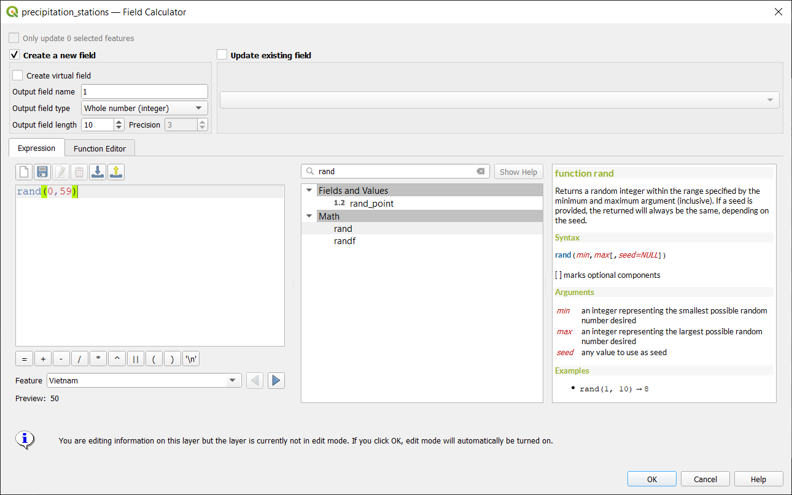
Hình 8.44 - Tạo các giá trị ngẫu nhiên trong một khoảng xác định.
Sau khi thêm và tính toán cho 7 cột, bảng thuộc tính sẽ giống như Hình 8.45

Hình 8.45 - Dữ liệu giả định cho 93 trạm đo mưa giả định ở Tp.HCM.
Tiếp theo, chúng ta sẽ nội suy các giá trị này cho từng ngày trong thời gian một tuần để tạo một layer liên tục phủ toàn bộ phạm vi hành chính Tp.HCM. Chúng ta sẽ sử dụng batch processing để thực hiện đồng loạt. Phương pháp nội suy được chọn cho ví dụ này là IDW - Inverse Distance Weighted.
Nhập các tham số sau:
- distance coefficient: 2
- extent:HCMC_admin_boundary
- output raster size: 50.
Các tham số được thiết lập như Hình 8.46.

Hình 8.46 - Nhập các tham số batch processing cho nội suy giá trị lượng mưa trong 07 ngày
Kết quả nội suy như Hình 8.47
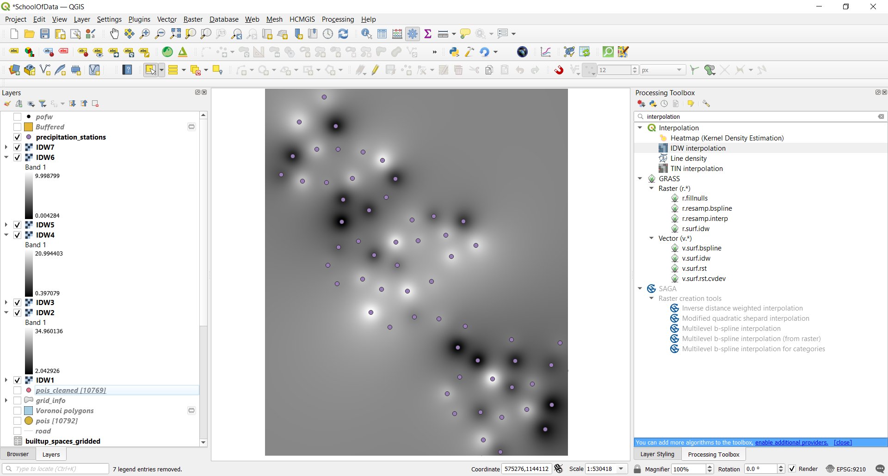
Hình 8.47 - Kết quả nội suy
Các trạm đo mưa hiển thị trên map cavas và trong Layers Panel bạn có thể thấy 07 raster vừa được tạo biểu diễn cho giá trị lượng mưa mỗi ngày của Tp.HCM
Tiếp theo, hãy thay đổi symbology của 7 raster layer để nhìn có màu sắc sơn (Properties ‣ Symbology ‣ Singleband pseudocolour ‣ Magma)
Nhìn vào lớp điểm trạm đo mưa và các raster nội suy, chúng ta thấy rằng bây giờ chúng ta đã có các giá trị cho toàn bộ khu vực Tp.HCM thay vì chỉ tại vị trí các trạm đo mưa. Có nhiều công cụ xử lý có thể áp dụng trên các raster này để trích lọc thông tin, sẽ được giới thiệu kĩ hơn ở Module tiếp theo - Xử lý và phân tích dữ liệu raster.
Tuy nhiên, vì chúng ta đã nội suy các trị đo mưa trong 07 ngày, chúng ta hãy chuẩn bị một đoạn hoạt hình - animation ngắn về diễn biến lượng mưa ở Tp.HCM.
Đề làm điều này, truy cập Properties của IDW1 raster ‣ Chọn tab Temporal ‣ Kích chọn Temporal ‣ Nhập start date và end date như hình 8.48. Làm lần lượt cho tất cả 07 raster.

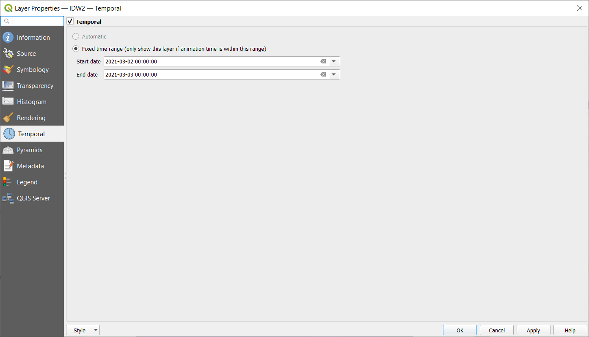
Hình 8.48_c - Nhập thông tin temporal cho IDW1, 2 và 7.
Truy cập Temporal Controller Panel (View ‣ Panels ‣ Temporal Controller Panel) và nhập các tham số như Hình 8.49

Hình 8.49 - Nhập các tham số cho Time Controller Panel.
Kích chọn nút Play  để thấy các giá trị thay đổi như thế nào. Bạn có thể chọn hiển thị những lớp khác. Trong hình 8.50, lớp buildings được thêm vào.
để thấy các giá trị thay đổi như thế nào. Bạn có thể chọn hiển thị những lớp khác. Trong hình 8.50, lớp buildings được thêm vào.

Hình 8.50 - Chọn hiển thị những lớp khác trong temporal animation.
Câu hỏi
- Có một hay nhiều thuật toán nội suy trong QGIS?
Có nhiều thuật toá nội suy trong QGIS.
- Phép nội suy hữu ích cho việc gì?
Phép nội suy hữu ích trong việc ước lượng dữ liệu dựa trên dữ liệu đã biết.